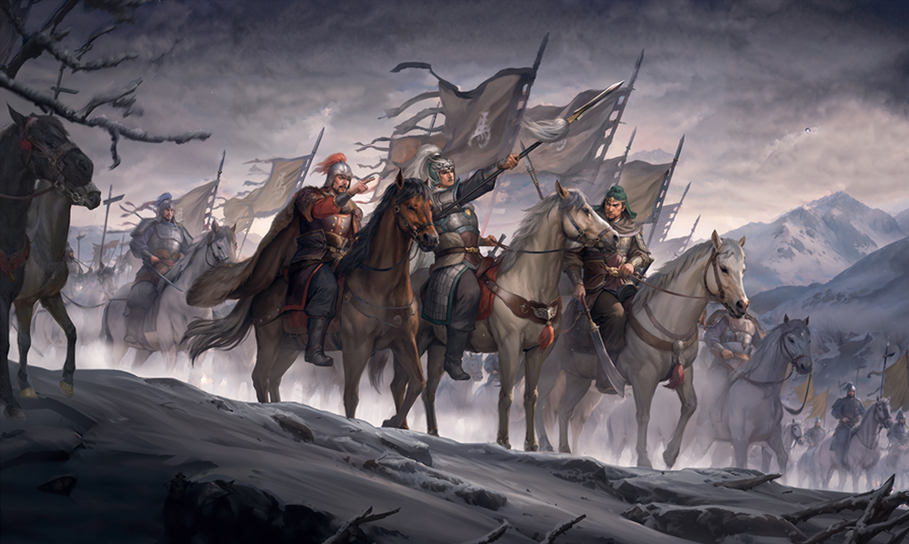
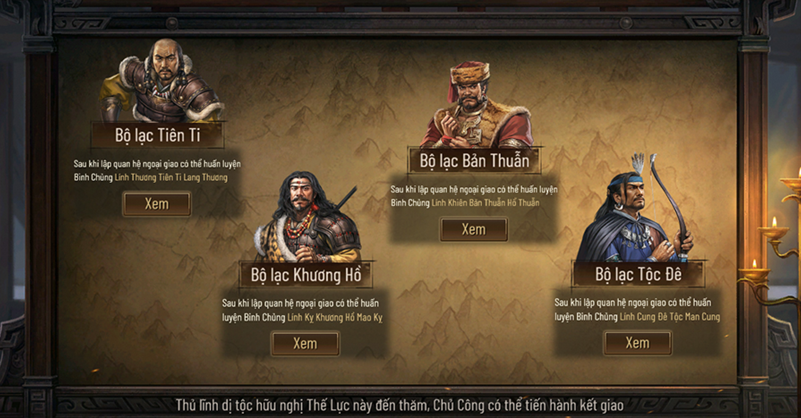
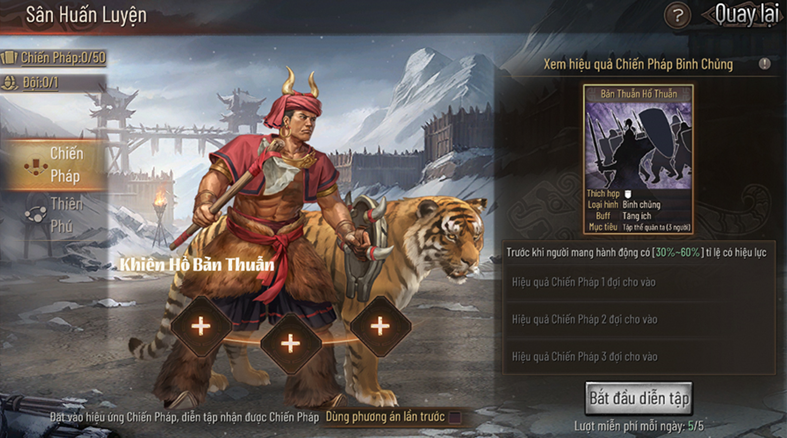
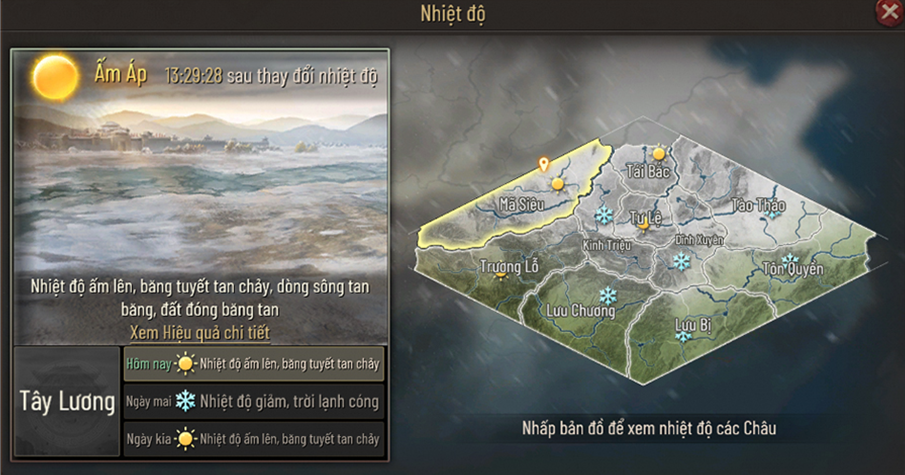
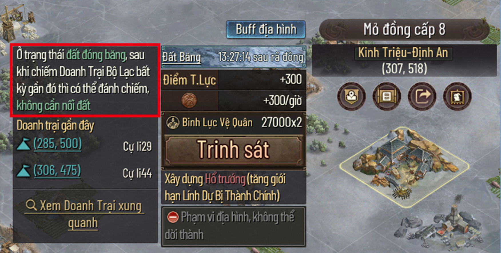
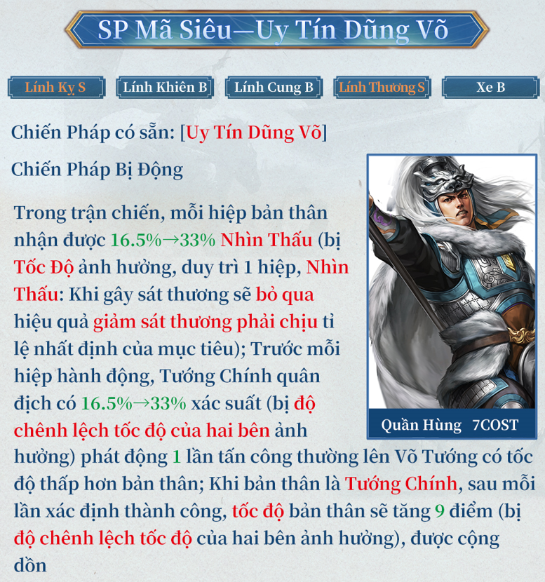
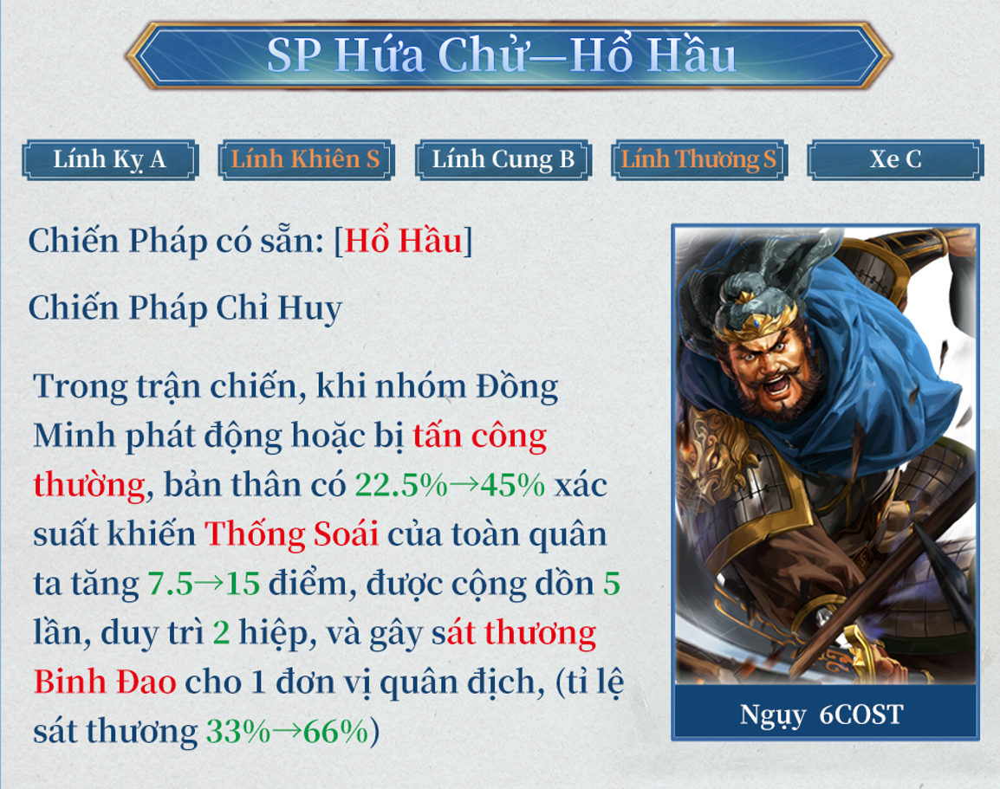
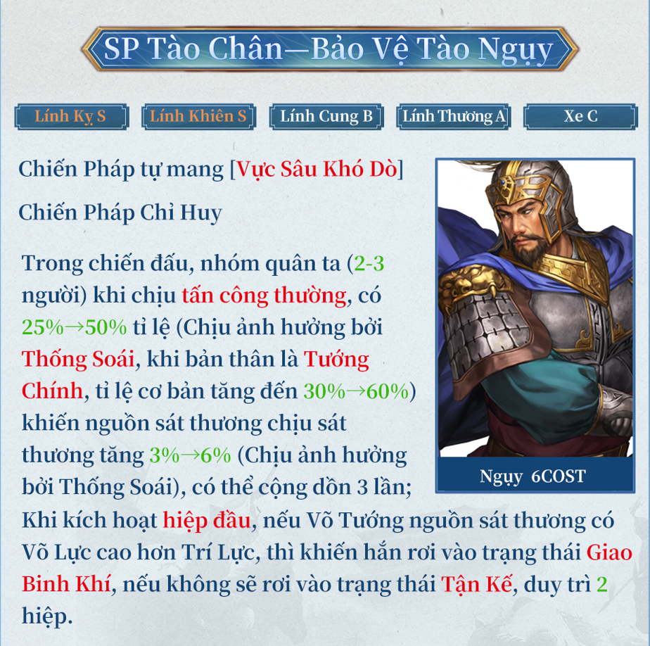
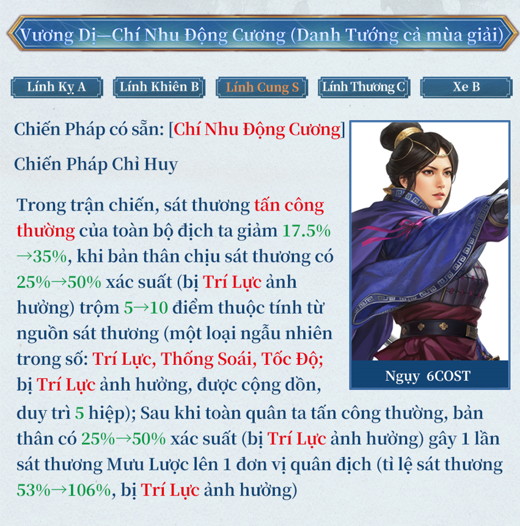

[Tam Quốc Chí - Chiến Lược] Ra mắt mùa giải mới “Trận Đồng Quan”, SP Mã Siêu long trọng ra mắt
Tam Quốc Chí- Chiến Lược, tựa game chiến thuật với hơn 100 triệu lượt tải toàn cầu, được KOEI TECMO chính thức ủy quyền, nay ra mắt phiên bản mới "Trận Đồng Quan".
Người chơi sẽ được trải nghiệm trận chiến đáng nhớ nhất trong cuộc đời Mã Siêu! Ngoài ra, còn có bốn thế lực dị tộc mà người chơi có thể tự do thiết lập mối quan hệ, cùng với bốn vị tướng mới xuất hiện, sẵn sàng hỗ trợ các vị chủ công tung hoành trên chiến trường băng tuyết!
Thế Lực Lục Phương, Tứ Đại Dị Tộc
Năm Công Nguyên 211, Mã Siêu, Hàn Toại khởi binh chống Tào, tập hợp người Khương Hồ, tập trung hàng vạn binh lính tại Đồng Quan. Tào Tháo dẫn quân xuất chinh, một trận chiến liên quan đến quyền sở hữu Quan Tây sắp nổ ra tại Đồng Quan.
Trong Trận Đồng Quan, các bộ tộc Khương và Đê đã huy động toàn bộ tinh binh, giúp Mã Siêu tập hợp được một lượng lớn quân tinh nhuệ, khiến Tào Tháo cũng phải e ngại trong một thời gian. Trong cốt truyện "Trận Đồng Quan" lần này, tất cả các thế lực đều có thể nhận được sự hỗ trợ từ tứ đại dị tộc!
Ở phần bộ lạc, phiên bản mới này sẽ cung cấp cho người chơi tứ đại bộ lạc, gồm có: Tiên Ti-Thương, Bản Thuẫn-Khiên, Khương Hồ-Kỵ, Đê Tộc-Cung. Người chơi có thể chọn cho mình một nhánh bộ lạc để tiếp tục chinh chiến trên sa trường.
Người chơi có thể chọn một trong bốn nhóm bộ lạc để thiết lập ngoại giao, từ đó mở ra nhiều tính năng bộ lạc mới như Chi Viện Dị Tộc, Tiếp Quản Cửa Ải, Xe Trống Bộ Lạc, Bộ Lạc Chi Viện.
Ngoài ra, trong hệ thống bộ lạc này, người chơi còn có thể cường hóa hệ thống Chiến Pháp và Thiên Phú để tăng thêm sức mạnh cho bộ lạc kết giao.
Cơ Chế Thời Tiết Và Địa Hình Hoàn Toàn Mới
Lần cập nhật này sẽ bổ sung hai trạng thái nhiệt độ mới là: Lạnh Lẽo và Ấm Áp, thay đổi vào lúc 5 giờ sáng mỗi ngày, ảnh hưởng đến thuộc tính của Đất Băng/Đất Cát và sông ngòi.
Khi thời tiết là Lạnh Lẽo, Đất Cát sẽ biến thành Đất Lạnh, các con sông đóng băng có thể đi lại được, mặt băng có thể nhanh chóng dựng lều trại, ưu thế tấn công và phòng thủ có thể thay đổi. Sau khi chiếm đóng một trại dị tộc khác ở khu vực Đất Lạnh sẽ không cần phải nối đất, có thể tự do chiếm đóng đất trong phạm vi Đất Lạnh! Khi thời tiết là Ấm Áp, quy tắc không cần nối đất của Đất Lạnh sẽ biến mất, mặt băng sẽ chuyển thành dòng sông, lều trại trên mặt băng sẽ tan chảy. Xin hãy chú ý đến sự thay đổi nhiệt độ hàng ngày, sự chuyển đổi giữa lạnh và ấm sẽ ảnh hưởng trực tiếp đến tình hình chiến trận.
Địa hình mới, gồm có Đất Cát và Đất Lạnh. Khu vực Đất Cát có đất đai tơi xốp, nếu gặp thời tiết lạnh sẽ đóng băng và hình thành một dạng địa hình hoàn toàn mới - Đất Lạnh.
Những con sông trong phạm vi Đất Cát, sau khi đóng băng sẽ có thể được quân đội chiếm đóng hoặc hành quân, các chủ công cũng có thể xây dựng lều trại trên mặt băng. Tuy nhiên, nếu thời tiết ấm lên, chúng sẽ dần tan chảy.
Cơ chế hoàn toàn mới khiến tình hình chiến trận phải thay đổi kịp thời và linh hoạt theo thời tiết, những khu vực không thể vượt qua cũng sẽ trở thành một phần trong chiến lược khi mùa đông đến!
Võ Tướng Mới
SP Mã Siêu
Ngoài ra, phiên bản này còn mang đến cho người chơi rất nhiều vị tướng mới như SP Hứa Chử, SP Tào Chân, Vương Dị.
  Bên cạnh đó, bản cập nhật kỳ này còn cung cấp thêm nhiều Chiến Pháp mới cho người chơi có thể thoải mái lựa chọn, gồm: Lâm Nguy Cứu Chủ, Sơ Trang Chiến Kích
Nhân dịp cập nhật phiên bản mới, Tam Quốc Chí - Chiến Lược mong muốn tiếp tục tiến bước trên con đường phát triển, không ngừng vươn lên và chinh phục những đỉnh cao mới! Đừng quên, để cập nhật các tin tức và thông tin mới nhất về game Tam Quốc Chí - Chiến Lược, hãy theo dõi ngay cộng đồng chính thức Tam Quốc Chí - Chiến Lược của chúng tôi.
Tải game ngay tại đây: https://oslink.vntth.com/r/QcirG5gF